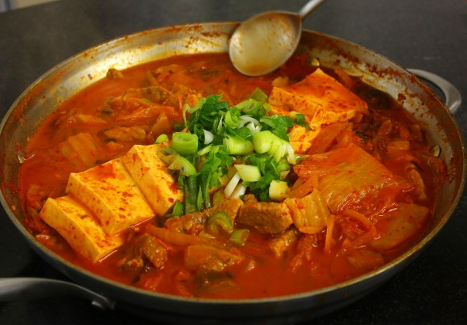

Kimchi-jjigae

Kimchi-jjigae (Kimchi stew)
Kimchi stew is one of the most common and loved dishes in Korean cuisine.
Not to be confused with the thinner Kimchi Soup, this stew is a thick and spicy
concoction typically consisting traditionally of aged kimchi, onion, thinly sliced pork belly, and seasonings.
Some variations can include a different type of protein, such as cod and other types of whitefish or canned tuna
Traditionally a communal meal, this stew is often served family style in a large pot to be shared with between all diners.
It is often at least a typical side dish in most Korean style meals.
Ingredients
- 1 pound kimchi, cut into bite size pieces
- 1/4 cup kimchi brine
- 1/2 pound pork shoulder (or pork belly)
- 1/2 package of tofu
- 3 green onions
- 1 medium onion
- 1 tsp kosher salt
- 2 tsp sugar
- 2 tsp gochugaru
- 1 T gochujang
- 1 tsp sesame oil
- 2 cups anchovy stock (or chicken or beef broth)
Steps
- Place the kimchi and brine in a pot. Add pork and sliced onion.
- Slice 2 green onions diagonally and add them to the pot
- Add salt, sugar, gochujang, and gochugaru. Drizzle with sesame oil and add the anchovy stock.
- Cover and cook for 10 minutes over medium high heat.
- Open and mix the seasonings with a spoon. Lay the sliced tofu on top
- cover and cook another 10-25 minutes over medium heat.
- Chop last remaining green onion and sprinkle it on top of the stew. Remove from heat and serve immediately with rice.
Return to main page